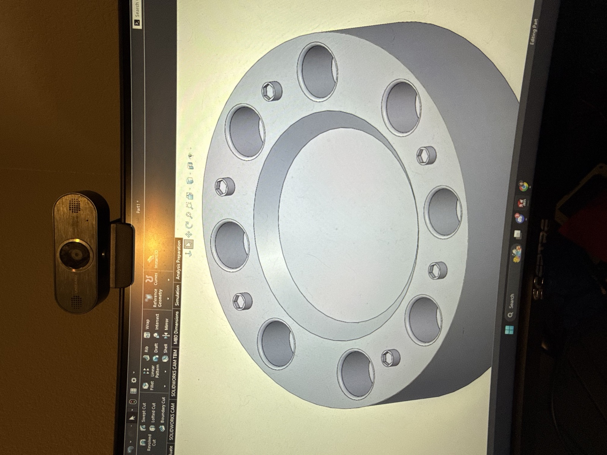
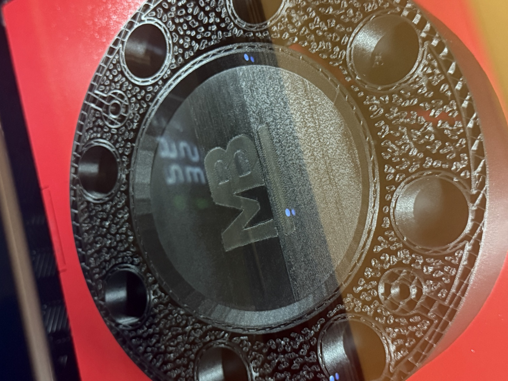
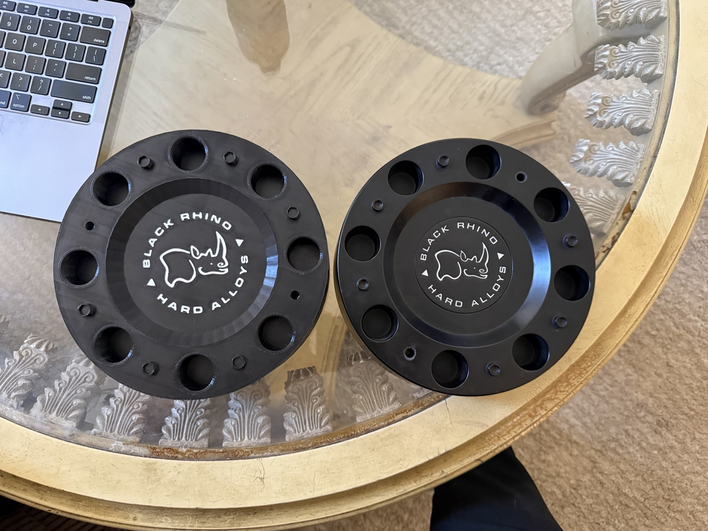

Overview
My dad asked me to design him a custom hub cap inspired by the look of Black Rhino Army wheels, so I modeled it in SolidWorks and produced it through 3D printing. The design had to reproduce the wheel's logo cleanly at a small scale while holding up to real driving conditions, not just look good sitting on a shelf.
The final design featured my dad's own personal logo, which took a lot of trial and error with layer height to print crisply—too coarse and the fine detail in the emblem got lost, too fine and print times became impractical. Beyond the aesthetics, I had to reinforce the design with additional supports beyond what a standard hubcap needs so the part could hold up under continuous centrifugal force while spinning with the wheel. After testing an initial prototype (V1), I moved to a final production run in PETG Carbon Fiber. This material was ideal for its high UV resistance—important living in the desert—along with its stiffness, ability to hide visible print layers, and strength under centrifugal load.
Screenshots


